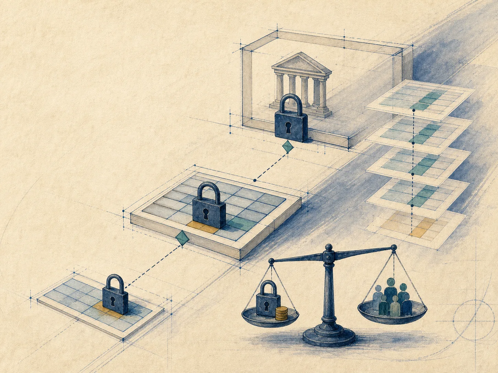
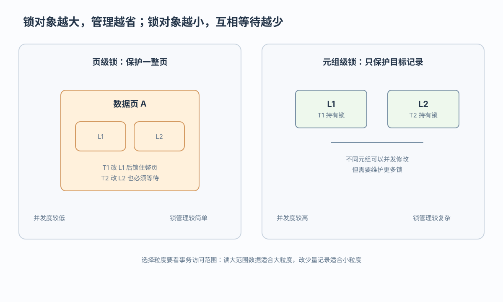
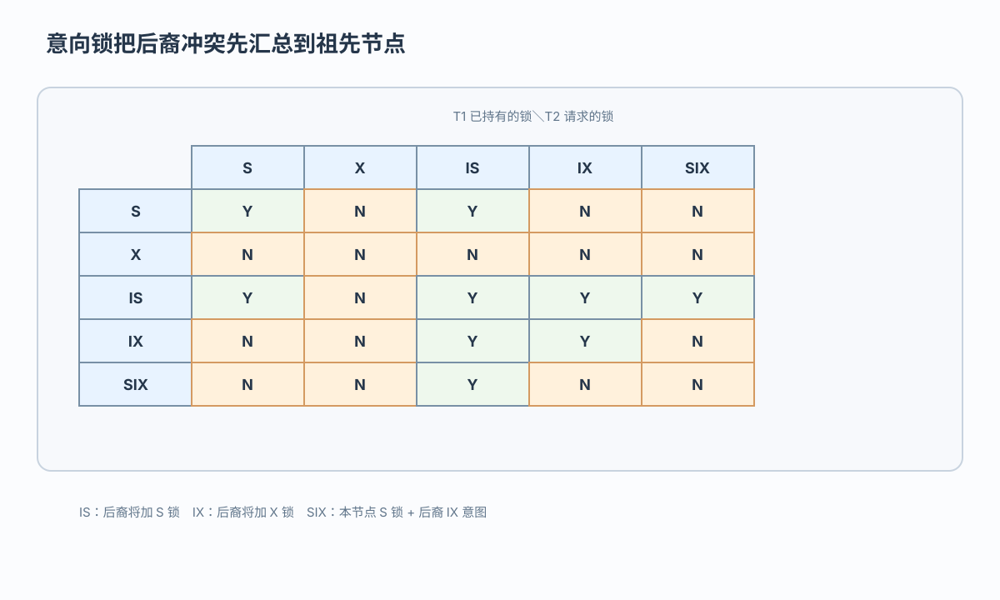
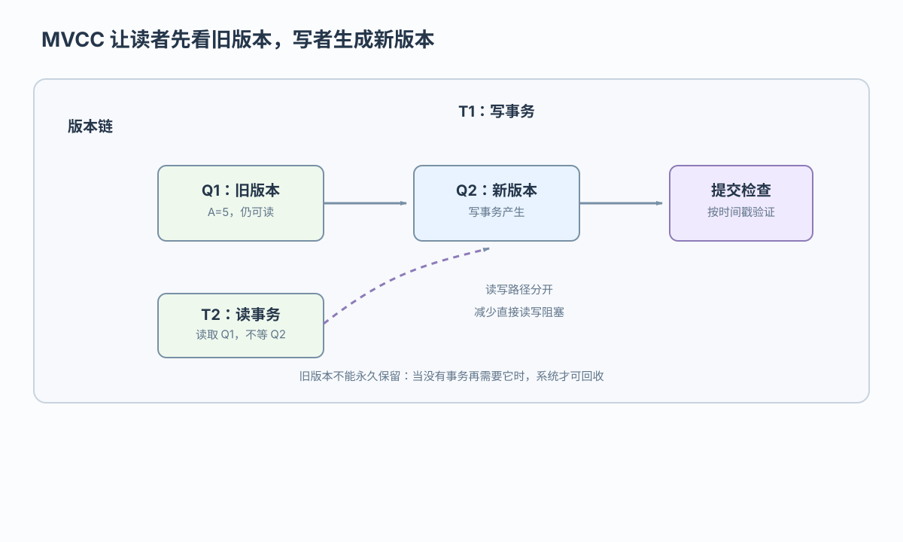

IS
IS 表示后裔节点准备加 S 锁

改一行和读整表该锁多大；读旧版本后为什么提交时仍可能等待
 VER. 2608
Built with impress.js
VER. 2608
Built with impress.js
为点更新写 IX(DB)→IX(R1)→X(L1)，为整表读选粒度，并判断时间戳可见版本
对象越小通常并发度越高，但前提是事务访问不同对象；锁管理成本也会增加

同一批事务在不同粒度下会有不同等待关系
| 场景 | 合适粒度 | 主要判断 |
|---|---|---|
T1 修改 L1，T2 修改同页 L2 | 页级／元组级 | 页级使 T2 等待；元组级允许并发但锁更多 |
T3 读取整张表 | 关系或数据库 | 避免逐元组申请大量锁 |
| 事务只修改少量元组 | 元组级 | 减少不相关数据被一起阻塞 |
只改一行时元组锁可避免挡住同页其他行；读整表时逐行申请成千上万个锁反而更贵，因此不能固定选择最小粒度
直接申请是显式锁；祖先 S/X 隐式保护后裔，IS/IX 不等于锁住后裔
S(R1)→L1、L2 获得隐式 S 保护 IX(R1)→只声明后裔将申请 X，不等于已获得 X(L1)直接申请的是显式锁；祖先 S/X 形成隐式保护；IS/IX 只声明后裔的加锁意图
申请元组锁前先向祖先节点声明意图

IS 表示后裔节点准备加 S 锁
IX 表示后裔节点准备加 X 锁
SIX 表示当前节点加 S 锁并带有 IX 意图，即 SIX = S + IX
纵轴表示已持有锁，横轴表示请求锁；先找到交点，再判断是否等待
Y 表示相容，N 表示不相容并需等待
IS 与 IX 相容，SIX 与 IX 不相容
更强的锁可替代较弱保护，反向替代可能不安全
在 L1 加 X 前，先给数据库和关系加 IX；释放时从 L1 逐层向上
IX(DB)→IX(R1)→X(L1)→UNLOCK L1→UNLOCK R1→UNLOCK DBS 或 X 锁四种方法处理冲突的时刻不同，等待、回滚、存储和清理成本也不同
| 方法 | 控制点 | 直观特点 |
|---|---|---|
| 封锁 | 申请 S/X 锁时 | 冲突时等待或回滚 |
| 时间戳 | 冲突规则判定时 | 违规事务回滚并重新开始 |
| 乐观方法 | 提交前验证 | 平时少管制，验证失败则回滚 |
| MVCC | 读写访问与版本 | 用旧版本减少读写直接阻塞，但增加存储和检查 |
T1 写出 Q2；T2 读取 Q1；T2 在提交前检查 T1 状态

T2 读取符合快照条件的 Q1，在旧版本上继续执行；图中虚线表示提交检查／事务关系，不表示 T2 读取 Q2
事务状态检查不等同于 c1 的乐观方法验证；T1 未完成时，T2 仍可能等待后再提交
每个版本记录最近成功写入与读取它的最大事务时间戳
| 判定 | 示例 | 结果 |
|---|---|---|
W-timestamp(Qk) | 成功写入 Qk 的最大事务时间戳 | 读 TS(T)=15 时选最新的 W≤15 版本 |
R-timestamp(Qk) | 成功读取 Qk 的最大事务时间戳 | 写入 TS(T)=15 且 R-timestamp=20 时属于过晚写入 |
给定 TS(T)=15，用版本时间戳决定读取、回滚、覆盖或新建
若 W(Q1)=10、W(Q2)=20，读取最新的 W≤15 版本 Q1，不能读取尚不可见的 Q2
若 TS<T 的最大读时间戳则回滚；若等于当前写时间戳则覆盖；否则创建新版本
读可继续；更新提交前在 X 锁对象上申请验证锁 C
更新事务 T1 产生新版本
T1 在持有 X 锁的对象上申请 C 锁
C 与 S 不相容，等待读者释放 S 锁
获得 C 锁后替换并清理旧版本，释放锁并完成提交
C 与 S/X 都不相容，更新仍可能等待读事务；MV2PL 并非读写永不等待
写清锁到页还是元组、祖先意向锁、可见版本，以及写者在哪等待或回滚
分别为点更新与整表读取选粒度，说明阻塞范围和锁数量
写出 IX(DB) → IX(R1) → X(L1) 后反向释放，并标出 2PL 边界
说明读者选可见旧版本、写者产新版本，以及何时拒绝或等待
比较阻塞、锁管理、版本存储、验证失败和清理；不存在无条件最优
完整答案要说明访问哪些行、冲突在加锁或提交哪一刻检查、失败时等待还是回滚，以及旧版本由谁清理
T1 修改 L1、T2 修改同页 L2、T3 读取整表时，如何选择粒度，为什么？S(R1)、IX(R1)、SIX(R1) 如何形成保护？IX(R1) 是否等于 X(L1)？不相容时请求方怎样处理？X(L1) 写出从数据库到目标元组的申请序列和反向释放序列，并说明 2PL 边界？W(Q1)=10、W(Q2)=20、R-timestamp(Q1)=20、TS(T)=15 时读哪个版本？写 Q1 是否回滚？C 锁处等待读事务？MVCC 减少哪种直接阻塞？